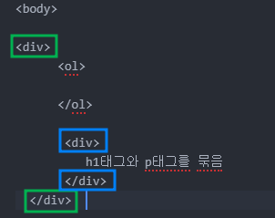
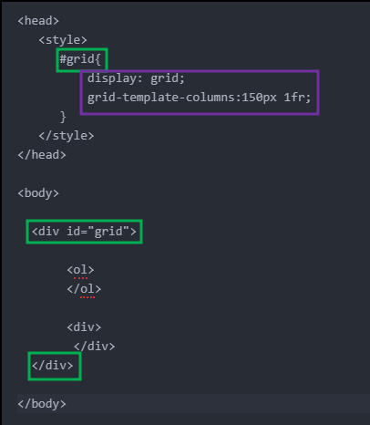

태그들은 각자의 부피를 가지고 있음
전체를 쓰는 태그를 block level element , 자신의 콘텐츠 크기만큼 쓰는 태그를 inline level element
태그마다 전체를 쓰는 것과 부분을 쓰는 태그가 있는데 이건 얼마든지 바꿀 수 있음
부피감을 바꾸기 위해서 display 속성을 사용
display: inline;
diaplay:block;
display:none;
화면 전체를 쓰고 있는 태그에서 display:brock; 가 생략 되어 있으면 width: 숫자px 를 사용할 수 있음

내가 하고 싶은건 옆에 목록과 본문을 나란하게 배치<div> : division의 약자로 block level element
<span> : inline element
지금 있는 건 h1태그와 p태그를 묶은 <div>와 <ol>
이 두 개를 하나의 그룹으로 묶어 그리드에 포함되는 하나의 요소를 사용하기 위해서는 두 개를 감싸는 공통의 부모 태그가 필요
이번에도 <div>를 사용해보자

부모 태그의 id값을 'grid'로 지정
디자인 목적만으로 <div id="grid">가 필요
앞서 부피감을 바꾸기 위한 display 속성 block,inline,none을 언급했었음
그러나 grid에서는 display 안먹힘
이때 grid-template-columns 속성을 추가
150px은 첫 번째 칼럼의 부피로 고정된 값이고 1fr은 화면 크기에 따라 달라짐
grid-template-columns: 2fr 1fr;
화면 전체를 3fr로 했을 때 왼쪽을 2, 오른쪽을 1로 나눠쓰겠단 소리